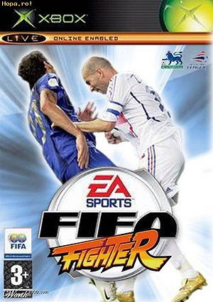
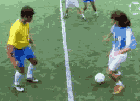

FIFA (videojuego)
 De: La Frikipedia, la enciclopedia extremadamente seria.
De: La Frikipedia, la enciclopedia extremadamente seria.
De la serie Videojuegos:
FIFA (videojuego)

El mejóh juego del siglo XX
| Desarrollado por:
|
EA Zport
|
| Distribuido por:
|
Electronics Jarts
|
| Diseñado por:
|
Como su nombre indica, la FIFA
|
| Motor
|
Un balón de fúrbo
|
| Género(s)
|
Deportes
|
| Fecha de lanzamiento:
|
Cada año
|
| Modos de juego:
|
Histeria, amistoso, torneo de barrio, liga de champiñones
|
| Requisitos:
|
Tener piernas y/o cabeza
|
| Disponible en:
|
Todo el mundo friki conocido
|
| Formatos:
|
DVDs
|
| Edades:
|
A partir de 1 año
|
| Puntuaciones:
|
99 puntos
|
se pelean con PES a ver quien es mejor en el sexo pero ambos son mierda
El FIFA es un simulador de furbo, caracterizado por tener jugadores pendejos obesos y con caras todas iguales. Posee un Impact Egine que permite que los jugadores caigan mas real cuando le aplicamos un Hyper Combo a lo Street Fighter patadon a lo Pepe. Es competidor de Pes a muerte teniendo varios enfretamientos entre la mafia japonesa de Konami y los vaqueros gringos gays pistoleros de EA. Ambos se esfuerzan por que juego tiene los movimientos mas cuadrados y árbitros mas estúpidos. FIFA ganó por 2 unidades en ventas, este año fue el mejor recaudando 15, permitiendo a EA comprar un kebab y una Pepsi.
Historia del Videojuego
En 1900 fue creado por un tipo que estaba aburrido de cansarse al jugar al fútbol en la vida real, decidió crear un conjunto de pixeles (11-11+arbitro y pelota) que debías moverlo con una palanca de 2 dos metro atornillada al piso y conecta a tu consola. Los gráficos eran impresionantes para la época, y provocaron varias convulsiones. El primer fifa tenia 12 equipos internacionales : Argechina, Austria, Brazil, Aspaña, Alemania del norte, Inglaterra, Hitlerland, Esparta, Antigua y Barbuda, Los Santos, River y Boca.
El éxito fue rotundo, y obligo a la empresa ya formada EA sacar un juego todos los años. Poco tiempo después salio su competidor PES pero solo se le permitía jugar a la emperatriz Japones y los reyes mas ricos de Europa.
Verdadera Historia del Videojuego (no significa que lo anterior sea una mentira total)
Uno de los primeros juegos de fútbol que se creó. Su hegemonía duró hasta que salió el PES y parece que ha vuelto después de que Konami sacará el mismo PES cada año, cambiando sólo la portada, añadiendo más publicidad y cambiando 2008 por 2009.
El primer FIFA que salió surgió en el año 1943, en el cual Hitler era delantero centro , Mussolinni defensa central y franco era portero . Mas adelante, en el 90 salia Maradona con un indice más, el de dopaje, el cual tenia un 99+.
Controles
 El FIFA también sacó tajada con Zidane.
Todo el mundo sabe jugar a los juegos de fútbol con los típicos controles de cuadrado = centro; redonda = chut; equis = pase; y triángulo para... digo R1 = correr. Pero a los de EA no se les ocurrió nada más que sacarse de la manga unos controles sólo para verdaderos pros (no pros del pro evolution sino pros de pro). Por eso el FIFA no es aceptado por el 99% de los canis.
Desde las últimas entregas, FIFA incorpora el control del Pro para captar más gente, ganar más beneficios y evitar que la gente se desespere con el juego.
Comentaristas de los FIFAs
Manolo Lama y su inseparable amigo o tal vez sean algo más Paco Gonzalez, "Nostrapacus" se le ofreció el trabajo de comentarista al Comegalletas pero resulto que estaba en una clínica de rehabilitación AA. Se rumorea que cuando no les sale de los huevos se sienten indispuestos para comentar un partido dejan grabados sus comentarios en los microfonos para que se crean que estan ahí. En FIFA 2013 los comentarios son de Fernando Palometiado, Mario "Asesino" Kempes y Ciro "nadie lo conoce" Procuna.
Comentarios míticos de Manolo Lama
- Vaya regalito y eso que no estamos en Navidad: El 25 de Diciembre
- Si eso era fuera de juego como mucho muy justito: Estas 5 metros en fuera de juego
- Un escarabajo negro ha interceptado la pelota: Manolo Lama hablando del arbitro tras interrumpir un pase
- Como ha podido fallar el portero de esa manera, vaya error: Al meter gol, al reventarle las manos al portero y marcar al rechaze
- Falta peligrosísima la va a reventar steven gerrard: falta en el centro del campo
- '*'Steven Gerrard arranca hacia la porteria contraria, asi vino la jugada del gol: Gerrard esta en el banquillo y el partido esta 0-0
- hoy el cadiz tiene muchas posibilidades de llevarse la victoria: en un cadiz-chelsea
- Mas que un tiro parece una broma, no inquieta a nadie: Cuando has lanzado un reventazo y el portero se ha metido la parada de su vida
- El arbitro se ha pasado de duro con esa tarjeta amarilla: Cuando le rompes la pierna al rival
- Falta peligrosisima: Cuando tu portero va a sacar una falta desde tu area
- Cuando el partido va 0-0 dice "Al medio tiempo resultado gafas" aunque también lo dice cuando va 8-8.
- "Por fin regresó el fútbol al FIFA 2005" aunque el FIFA que estes jugando sea el 2006.
- "Ahora todos quieren marcar su gol" cuando vas 1-0 ganando y el gol se lo ha metido el portero en propia
- "Denilson, Denilson, Denilson!!!!" cuando Denilson la ha perdido hace media hora en el FIFA 2000
- "Partido muy equilibrado" Cuando con el Manchester le vas ganando 66-1 al Cadiz
- "Que bien le ha arrebatado la pelota" y el jugador esta retorciendose de dolor en el suelo
- "Con que precisión iba ese tiro" cuando tira Capi, Emana o Arzu y pasa gol sur.
- "El gran fichaje es el 9 local" cuando ninguno de los 22 jugadores usa el 9 en el dorsal o se lo has puesto a baúl.
- " Eso está claro que era fuera de juego" cuando juegas 2 horas después de un fuera de juego que no era.
- "Que retumben los tambores el que va a hablar es Paco Gonzalez" le hará tanta propaganda para quedar bien con el y obtener su recompensa en la noche (una cena invitada por Paco no seáis mal pensados).
- "Madre de mi vida han visto que fallo" cuando acabas de hacer un saque de portería.
- "Tenemos la ventaja de ver la repetición en cámara lenta" cuando ya recuperaste el balón y tienes una opción clara de gol.
- "Están en el partido a pesar de sentirse ya campeones" cuando ya iniciaste un nueva temporada y vas en la jornada 2.
- "En futbol puede pasar de todo menos que este equipo gane" un Chelsea-Manchester U. (veridico).
- "1-0 para el equipo local" cuando juegas de visitante y vas ganado.
- "La defensa ha estado en su sitio" cuando uno de tus delanteros conisguió quitarle el balón a un defensor.
- "Si sigue así puede hacer un hatrick" cuando llevas 1 gol al minuto 90.
- "Si siguen en esta linea puede llegar la remontada" cuando vas 6-1 minuto 92.
- "Madre mía, así no le mete un gol ni al arcoiris" cuando acabas de marcar un penalti.
- "Sale rozando el larguero" cuando el balón rebotó en el travesaño y sale disparado hacia arriba 10 metros.
- "Menuda parada, eso ha sido espectacular" cuando el portero recibe un remate al medio de la portería desde media cancha y rebota hacia delante.
- "Se ha librado de la roja de milagro" cuando tienes desactivadas las tarjetas
- "Le ha podido arrancar un pedazo de su cuerpo" cuando le hacen falta a un jugador.
- "Buen regate, como mandan los canoners" y te la acaban de quitar.
- "Remonta y adelanta a su equipo" Es evidente no?
- "Menudo porterito... parece que esta conpinchado con los rivales" cuando Asenjo realiza un paradon a 2 metros, que grabas en la memory, de cr9 en la final de la champions en el minuto 90+2 a 0-0
- "Esta defensa es una coladera. " Cuando vas 0-0 y en el min 80
- Falla mas que una escopeta de la feria y lo unico que hacias era despejar el balon que estaba en tu campo
- Falla falla y falla pero por fin marca solo has marcado un gol en tu primer ocasion y tu primer chut
- Oh dios mio le ha robado la cartera al defensa cuando le robas el balon al delantero.
- "Tiene 3 tallas mas de guantes y por eso la ha parado" cuando la despejo el defensa con la cabeza.
- "No tiene pelo pero dios mio de mi vida como remata de cabeza" aunque el que remate sea Ronaldinho
- "Si lo marca paco yo me jubilo" cuando estas en frente de la porteria y sin portero
- "Oh que mal le ha dado a una pobre paloma" aunque paso rozando el larguero
- "Si tuviera dinero apostaria a blanco y a negro, es un partido igualadísimo" Alcorcón vs Chelsea
- "¡Vaya tackling!" cuando acbas de rematar de cabeza
- "¡Atención! Ha tocado dos pelotas, ha marcado dos goles": Marcaste 2 goles y tu jugador es el que mas balones toca en el partido
Comentarios míticos de Paco González
 Ejemplo del Impact Engine
ROMPEBOLAS del FIFA
Fernando Torres el estrés a veces llega a limites insospechados y mas si hay una buenorra en la grada(
¡¡luego hay que aguantar el partido con los calzones mojados de semen!!).
- Vaya gol mas justito por poco roza el palo: Cuando tiras con toda la tranquilidad del mundo a puerta vacia y entra rasa y por el centro
- Se ha creido que podia hacer ese regate, eso solo lo hacen los mejores del mundo: Cuando con Messi o CR7 se te va un rabona espectacular por los pelos
- Este partido ha levantado mucha espectación y el mundo entero estaba esperandolo: En un Cádiz - Huesca
- Ha quemado el campo con su carrera. Y de paso los corazones en la grada: Cuando marcas con el Madrid en el Camp Nou recibiendo un pase de la muerte
- visto lo visto en la primera parte, en la segunda espero poco, muy poco o nada: en un barça vs madrid que va 5-5
- "Los 2 equipos están en el fondo de la tabla" cuando vas en 3er lugar.
- "A este portero hay que tirarle raso y orillado a ser posible" dando consejos a cr9 sobre como meter gol a Pablo Asensi el portero del Cadiz B.
- "Esto es un partido muy importante en un hercules-albacete"
- "Si manolo, esto es un autentico David contra Goliath" respuesta de Paco al comentario sobre el Chelsea-Albacete.
- "Atento manolo que de estas he visto meter muchas" cuando haces una falta al portero y este se dispone a sacar en su area.
- Que tiro mas malo y más lamentable manolo: Chutazo que se va tras dar en la escuadra tras la parada de su vida del portero
- "Recuerda que siempre hay migajas por que pelear y si te animas y ganas los últimos partidos puedes llegar a puestos europeos" cuando estas jugando la liga brasileña quedan dos partidos y estas penultimo.
- "El cabeceo es lo fuerte de este hombre" cuando has metido un gol de chilena.
- "En mi vida había visto un inicio de partido similar" 1-0 al minuto 90.
- "En serio, que partido mas malo" 5-6 al minuto 45 (remontada bestial de los visitantes, con 2 menos).
- "Eh tu, este juego es para jugadores mejores que tú" y resulta que esta jugando un chino
- "Deberias estar estudiando, porque para esto... Ganando 6-0 en el minuto 20 contra el Chelsea en campeon mundial, con el Murcia (y el portero con roja)
- "¡ahi rasita y al palo, a donde le duele al portero!" Cuando juegas con el Betis,tiras con Belenguer y el balon se embarca en la grada de los comentaristas.
- "Viendo la primera parte espero de la segunda poco,muy poco o nada"Cuando metiste 4 goles en los primeros 30 minutos y expulsaron a 4 jugadores del equipo contrario(entre ellos el portero) y juegas con un equipo mexicano de nombre impronunciable contra el barça.
- "Lleva la pelota el robacoches" Salta este comentario cuando llevas el balón con Guti.
- "Ha faltado el canto de un euro"Aunque mandes la pelota a Asturias y estés jugando en Sevilla
- "Vaya gol,llama a tu padre para que lo vea"cuando marcas a puerta vacia
- "No sé como puede salir impune de esa acción,ha sido una patada criminal,y luego sacan amarilla por protestar..."cuando haces carga
- "Este arbitro se está pasando.Tantas amarillas en tan poco tiempo..."Minuto 90,primera tarjeta del partido
- " No se para que hace el entrenador este cambio.¿Está lesionado o qué?"Después de que cambies a un canterano de 16 años,titular indiscutible por na...un jugador normalillo,MESSI.
Características del FIFA
Edición Fifa en la que tendremos que darles por culo a los jugadores de holanda (
¡¡orgasmos incluidos!!).
Fifa 11 edicion para la localidad de alcorcon y de madrid (
¡¡modo 4-0 incluido!!).

Maldini fue elegido el mejor jugador del FIFA 09 (
¡¡bakalá!!).
Y el FIFA 12 promete aún más.
Edicion FIFA Superman
ROMPEOSTIAS DELUXE (
¡¡modo ostiazos incluido!!).
Edicion fifa en la que manejaremos a un niño en la grada y tendremos que joder a los porteros metiendo globitos en el campo (
¡¡globos de agua incluidos !!).
Imagen del juego de arriba en el plena accion (
¡¡eso supone 2 globos de agua de regalo!!).
- Al meterte en propia, lo celebra tu equipo y lo lamenta el rival
- Los goles fantasmas siempre se dan por validos aqui, da igual que sea imposible de ver por el ojo humano los arbitros tienes rayos X y veran el gol aunque haya 15 tios en el area y el balon entre por un centimetro
- No se puede regatear, es imposible, da igual que tengas a Cristiano Ronaldo o a Messi (los mejores del juego), es imposible.
- Marcar gol es bastante complicado, estarás 2 meses marcando de la misma forma: presionando con el/los delantero/s a saco hasta que le robas la bola y te vas sólo hacia la portería, después también aprenderás a marcar de centro.
- Una entrada que en la vida real es tarjeta roja aqui o no es nada o es amarilla.
- Hay mucho crío en el online, olvídate de marcar primero, siempre se desconectará y a veces hasta te contará la derrota a ti. El mejor de españa (y probablemente del mundo) es un chaval que nació en el 95 y se llama tazzmany , la diferencia es que no se sale aunque pierda 7-0, aunque nunca se ha dado ese resultado, si eres un friki y le quieres retar, su táctica es marcarte 3 o 4 goles lo mas rapido posible i estar presionando todo el partido.
- De cada 10 tiros, 2 van al palo y
duele mucho por el roce con las bolas, no se sabe porqué.
- ¿De qué te sirve tanta virguería en el modo libre? En los partidos utilizas el 10% de las guapadas de Ronaldinho & company, el 90% es para poner el juego delante de los colegas y decir, mira hermano lo que se puede hacer en el FIFA y no en el pro.
- El árbitro a veces se cree uno más del equipo e interviene en los pases del equipo rival, realmente molesto.
- Si tienes una Xbox 360 olvídate de hacer el logro de la chilena, es sencillamente imposible, aunque tengas a Cristiano Ronaldo al 99.
- Las tácticas se ponen como le da la gana, si pones un 4-4-2, te pone un mediocampista de delantero y al hacerlo, le baja la media por no jugar en su posición.
- Eso de marcar de chut de fuera del área es imposible, esto no es el pro payo, THIS IS FIFAAA
- Como decía antes, eso de marcar de fuera del área es imposible, da igual si el portero ha subido a rematar un córner y estés solo con Barilete Cosmico Ronaldo , da igual, tu chut se irá fuera o en su defecto al palo.
- Las voleas siempre son iguales, ¿es necesario que levanten las dos piernas?
- Sólo marcarás de bolea y de fuera del área si tienes al gran Touré Yayá o en su defecto a Keita.
- El Barça juega con un portero llamado Victor Valdés, el cual se parece lo mismo que mi poya a una botella, bueno sí, Valdés del Barça y Valdés del juego son calvos, al igual que mi poya y mi botella tienen líquido por dentro.
- Marcar de córner es bastante difícil, ya que todos los porteros la cogen si el centro va al primer palo. Pero hay un efecto proporcional si lo haces al segundo palo, porque se las comen todas.
- Corre en la dirección contraria de algún jugador que viene de cara, automáticamente la pelota pasará a tus piernas y se la habrás robado.
- Los jugadores que salen en las portadas de este videojuego paulatinamente bajan su nivel de juego (ejemplos: Morientes etc.)
- A Ronaldinho lo pintan como el puto amo.
- En el Modo Mánager los jugadores mejoran como la espuma, Abidal, después de una temporada con el F.C Barcelona, tiene mejor media que Cristiano Ronaldo.
- Al tirar un penalti, algunos porteros experimentan un lag dudoso.
- El sonido al chutar una bola se oye desde la cabina de los comentaristas.
- Es el único lugar dónde vas a poder ver partidos que terminen 11-10.
- El portero controlado por computadora puede saltar hasta tres metros en medio segundo con tal de evitar que le metan gol.
- Aunque seas Cristiano Ronaldo y el portero rival sea el tercer portero de un equipo de media estrella sabrá atajar mejor de lo que tú lo harías.
- La computadora anota el 85 % de los tiros libres
- Dentro del 15 % de tiros libres fallados por la computadora más de la mitad es porque te salvó el poste.
- De cada 10 penaltis que te toca atajar tu portero se queda paralizado en al menos 6 de ellos.
- De cada 10 penaltis que te toca atajar, en dos el oponente estrella la pelota al poste.
- De cada 10 penaltis que te toca atajar sólo conseguirás detener dos.
- Al jugar el Pro Evolution Zoccer pierdes habilidades en el Fifa
- Seguro que te habrás dado cuenta que el publico son putos cuadraditos, tanta tecnologia y gráfico de última generación y sigues teniendo año tras año al super mario o al donkey kong de 1987 de público
- Manolo Lama en los primeros Fifas celebraba los goles de la manera mas sosa que podía hacerse, frases tipo (que gol mas hermoso), (un gol muy bonito¡) hasta que hará poco metieron celebraciones mas radiofonicas como las de carrusel (gooooooooooooooooooooooooooooool)
- Según se cuenta, el próximo Fifa tras marcar un gol, dicen que meteran el sonidillo del Carrusel, "Atención tenemos gol en Barcelona, en el campo nuevo¡, pipipipipiripipi"
- el Fifa y la vida no volvió a ser la misma desde que quitaron la opción de poder cazar al portero con un entradón cuando este perdía tiempo, teniendo el balón en la mano o al salvarte un gol cantado, lleno de rabia te desahogabas cazándole, que tiempos aquellos¡ (era roja directa si, pero te desahogaba que no veas)
- Meter un gol de penalti desde el Fifa 2011 es mision imposible, asi que ya sabes, si te van a marcar un gol si o si solo con el portero delante, no lo dudes, no tienes nada que perder, caza al delantero rival con tu último defensa por detrás, será la roja y el penalti mas rentable de tu vida.
- Es inevitable marcar siempre con la misma jugada
- Nada volverá a ser lo mismo desde que ya no te dejan ver la quinta roja en un partido y lo suspenden
Ver también
|
|
 Shooter Shooter
 Terror Terror
 Velocidad Velocidad
 Rol Rol
 Estrategia Estrategia
 Aventuras Aventuras
 Fight! Fight!
 Clásicos Clásicos
 Deportivos Deportivos
 Aventura gráfica Aventura gráfica
 Novela visual Novela visual
 Personajes de videojuegos Personajes de videojuegos
|
Autor(es):
- Fordus
- Max Slug
- Aque
- Roms
- Goten23
- Azulejos
- Iskar
- Trabuconodosor
- NRikee
- Darwon
Frikipedia 2005-2016, Licencia
GFDL 1.2 - Extraído por FrikiLeaks